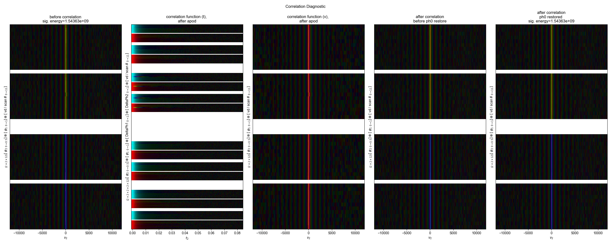
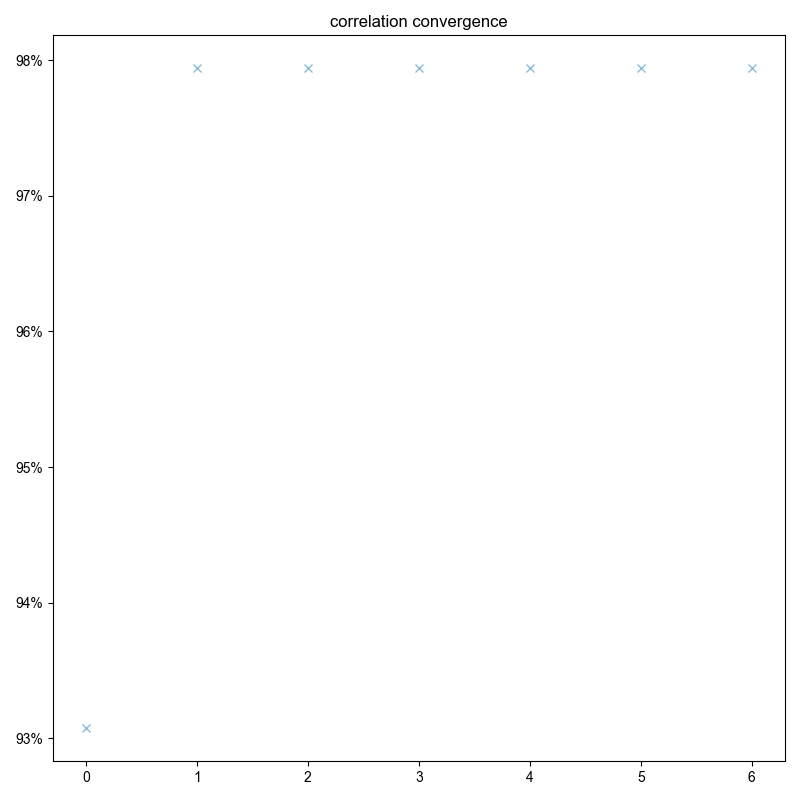

Note
Go to the end to download the full example code
Phase Cycling Noise¶
A demo of the correlation alignment on a dataset with a lot of phase cycling noise
- 
- 
You didn't set units for t2 before saving the data!!!
[(12, 'vd'), (2, 'ph2'), (2, 'ph1'), (2048, 't2')]
1: raw data FIR_27dBm |||(None, None)
2: Correlation Diagnostics |||(None, None)
3: correlation convergence |||(None, None)
from pyspecdata import figlist_var, find_file
from pyspecProcScripts import correl_align
from numpy import exp, pi
save_fig = False
this_figsize = (9, 5.56)
with figlist_var() as fl:
for date, id_string, node_name in [
("210607", "TEMPOL_100mM_cap_probe_DNP", "FIR_27dBm"),
]:
filename = date + "_" + id_string + ".h5"
nodename = "signal"
nodename = node_name
s = find_file(filename, expno=nodename, exp_type="ODNP_NMR_comp/ODNP")
s = s["nScans", 0]
print(s.shape)
s.reorder(["ph2", "ph1", "vd", "t2"])
s.setaxis("vd", "#")
s.ft(["ph1", "ph2"])
fl.next("raw data %s" % node_name)
s["vd", 0] *= -1
s.setaxis("t2", lambda x: x - 1.06e-3)
s.ft("t2", shift=True)
s.ift(["ph1", "ph2"])
s *= exp(s.fromaxis("ph2") * 2 * pi * 1j)
fl.image(s)
s.ift("t2")
s /= exp(s.fromaxis("ph2") * 2 * pi * 1j)
s.ft(["ph1", "ph2"])
s.ift(["ph1", "ph2"])
signal_pathway = {"ph1": 0, "ph2": 1}
s.ft("t2")
opt_shift, sigma, mask_func = correl_align(
s,
indirect_dim="vd",
signal_pathway=signal_pathway,
sigma=3000 / 2.355,
max_shift=300,
fl=fl,
)
Total running time of the script: (0 minutes 15.926 seconds)